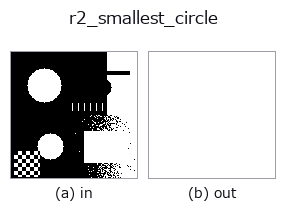

region op• Data kinds: region → region
• Call: fullseye.apply(img, "r2_smallest_circle", a=0.5, b=0.5) (the 2-D model is one image plus two scalar knobs a,b∈[0,1])
• HALCON equivalent: smallest_circle (the HALCON reference is a useful guide to its meaning and parameters)

*The figure is the actual output on a synthetic 128×128 input. Left: input, right: output. Point clouds are drawn as a top-down scatter (brightness = z), 1-D series as a line plot, volumes as the maximum-intensity projection along z, videos as the middle frame, complex images as magnitude; return values that are not pictures are shown as the values themselves.*
Sweeping knob a (0.1 / 0.5 / 0.9, the other knob at its default):
▸ r2_smallest_circle: knob a sweep (docs site)
*Knob b does not change the output (measured: identical at 0.1 / 0.5 / 0.9).*
Stages (the ops that come before → this op, left to right):
▸ r2_smallest_circle: stages (docs site)
On other images (synthetic scene / photo / coins. Top row: inputs, bottom row: their outputs. Knobs at default):
▸ r2_smallest_circle: other inputs (docs site)
Minimum enclosing circle as a mask (Welzl); a inflates radius (>=0).
Draws, as a mask, the minimum enclosing circle containing all foreground pixels (pixel centres) of the region. The foreground coordinates are reduced to the convex hull (Andrew's monotone chain, with the robust version of predicates.orient2d for orientation tests), and then Welzl's recursive algorithm finds the exact minimum circle (cy, cx, r). The order of the convex hull vertices is shuffled with a fixed numpy.random.default_rng(0), so the result is deterministic.
The radius drawn is r_draw = (r + 0.75) * (1 + 0.4*a). Even at a=0 it is inflated by an extra 0.75 pixel (with the pixel-centre-based r the edge pixels would be cut off, so the design makes sure all foreground pixels are included). At a=1 it is 1.4 times. a is clipped to [0,1]. b is unused. The return value is a float64 0/1 mask of the same shape as the input; all zeros if there is no foreground.
Note: the output always contains the input region, and raising a never moves it in the shrinking direction. If there are several connected components, 1 circle encloses them all. If the foreground is 1 pixel, r=0 gives a disc of radius 0.75 (1 pixel). Welzl's recursion goes as deep as the number of convex hull vertices. The numerical values of the circle's centre and radius are not returned. The radius ratio to the inscribed circle r2_inner_circle is a rough measure of roundness; the oriented circumscribed shape is r2_smallest_rectangle2.
Border handling: treat everything outside the image as background (0) (measured; tools/impl2/border_probe.py).
• gallery2d_region family guide
• Sample-data catalog (download URLs / licences) — 2-D uses skimage.data (BSD/public domain) plus synthetic images; 3-D lists download URLs for real data sources (Stanford, PDS, …).
• Operator provenance and references — the sources of the research/methods this op family came from.
• The canonical algorithm (author, year) and its uses are named in the family usage guide above.
The program below has been verified to run (same input as the figure). In Studio's help this block becomes buttons that load and run it on the spot.
threshold 0.50 0.50 r2_smallest_circle 0.50 0.50
▸ Load this pipeline · Load & run
• gallery2d_region — py -3.11 examples/gallery2d_region.py
region as input)identity · reg_erode · reg_dilate · reg_open · reg_close · fill_holes · select_largest · remove_small
region)reg_erode · reg_dilate · reg_open · reg_close · fill_holes · select_largest · remove_small · invert_region
*Provenance: ops.py — 2D operator registry. This per-op note is generated by tools/opdocs.py md (do not hand-edit).*
© 2026 Kazufumi Furuse — Fullseye operator documentation. Licensed under Apache-2.0.